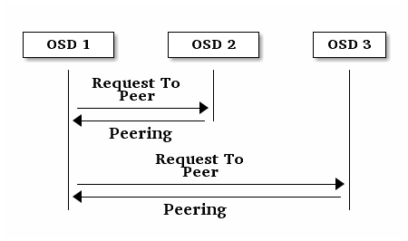

监控 OSD 和归置组¶
高可用性和高可靠性要求容错方法来管理软硬件。 Ceph 没有单故障点，并且能在“降级”模式下继续提供服务。其数据归置引进了一个间接层，它可保证数据不会直接绑死到某一个特定 OSD 地址，这也意味着追踪系统错误的根源得深入归置组及底层的 OSD 。
Tip
集群某一部分失效可能导致不能访问某个对象，但不会牵连其他对象。碰到这种问题时无需恐慌，只需按步骤检查 OSD 和归置组，然后排除故障。
Ceph 通常能自己康复，然而如果故障持续存在，监控 OSD 和归置组有助于找出问题所在。
监控 OSD¶
某 OSD 的状态可以是在集群内（ in ）或集群外（ out ）、也可以是活着且在运行（ up ）或挂了且不在运行（ down ）。如果一个 OSD 活着，它也可以是 in （你可以读写数据）或者 out 集群。如果它以前是 in 但最近 out 了， Ceph 会把其归置组迁移到其他 OSD 。如果一 OSD out 了， CRUSH 就不会再分配归置组给它。如果它挂了（ down ）其状态也应该是 out 。
Note
如果一 OSD 状态为 down 且 in ，必定有问题，而且集群处于非健康状态。

如果你执行过这些命令，如 ceph health 、 ceph -s 、或 ceph -w ，也许注意到了，集群并非一直返回 HEALTH OK ，别紧张。就 OSD 而言你应该明确，在一些情况下集群不会返回 HEALTH OK ：
你还没启动集群（它不会响应的）。
你刚刚启动或重启完集群，而且它还没准备好，因为归置组正被创建、 OSD 们正在相互建立连接。
你刚刚增加或拆除一个 OSD 。
你刚刚修改完集群运行图。
OSD 监控的一个重要事情是，当集群启动并运行时，所有 OSD 也应该是启动（ up ）并在集群内（ in ）运行。用下列命令查看：
ceph osd stat
其结果会告诉你 OSD 总数（ x ）、多少个是 up 的（ y ）、多少个是 in 的（ z ）、还有运行图的 epoch (eNNNN) 。
x osds: y up, z in; epoch: eNNNN
如果处于 in 状态的 OSD 多于 up 的，用下列命令看看哪些
ceph-osd 守护进程没在运行：
ceph osd tree
#ID CLASS WEIGHT TYPE NAME STATUS REWEIGHT PRI-AFF
-1 2.00000 pool openstack
-3 2.00000 rack dell-2950-rack-A
-2 2.00000 host dell-2950-A1
0 ssd 1.00000 osd.0 up 1.00000 1.00000
1 ssd 1.00000 osd.1 down 1.00000 1.00000
Tip
精心设计的 CRUSH 分级结构可以帮你更快的定位到物理位置、加快故障排除。
若一个 OSD 状态为 down ，启动它：
sudo systemctl start ceph-osd@1
和 OSD 没运行或不启动相关的问题请看 OSD 没运行。
归置组集¶
CRUSH 要把归置组分配到 OSD 时，它先查询这个存储池的副本数设置，再把归置组分配到 OSD ，这样就把各副本分配到了不同 OSD 。比如，如果存储池要求归置组有 3 个副本， CRUSH 可能把它们分别分配到 osd.1 、 osd.2 、 osd.3 。考虑到你设置于 CRUSH 运行图中的失败域，实际上 CRUSH 找出的是伪随机位置，所以在大型集群中，你很少能看到归置组被分配到了相邻的 OSD 。我们把涉及某个特定归置组副本的一组 OSD 称为 acting set 。在一些情况下，位于 acting set 中的一个 OSD down 了或者不能为归置组内的对象提供服务，这些情形发生时无需惊慌，常见原因如下：
你增加或拆除了一 OSD 。然后 CRUSH 把那个归置组分配到了其他 OSD ，因此改变了 Acting Set 的构成、并且用 backfill 进程启动了数据迁移；
一 OSD
down了、重启了、而现在正恢复（recovering）；acting set 中的一个 OSD 挂了，不能提供服务，另一个 OSD 临时接替其工作。
Ceph 靠 up set 处理客户端请求，它们是最终处理请求的一系列 OSD 。大多数情况下 up set 和 acting set 本质上相同，如果不同，说明可能 Ceph 在迁移数据、某 OSD 在恢复、或者哪里有问题。这种情况下， Ceph 通常表现为 HEALTH WARN 状态，还有 “stuck stale” 消息。
用下列命令获取归置组列表：
ceph pg dump
要根据指定归置组号查看哪些 OSD 位于 Acting Set 或 Up Set 里，执行：
ceph pg map {pg-num}
其结果会告诉你 osdmap 版本（ eNNN ）、归置组号（ {pg-num} ）、 Up Set 内的 OSD （ up[] ）、和 Acting Set 内的 OSD （ acting[] ）。
osdmap eNNN pg {raw-pg-num} ({pg-num}) -> up [0,1,2] acting [0,1,2]
Note
如果 Up Set 和 Acting Set 不一致，这可能表明集群内部在重均衡或者有潜在问题。
节点互联¶
写入数据前，归置组必须处于 active 、而且应该是 clean 状态。假设一存储池的归置组有 3 个副本，为让 Ceph 确定归置组的当前状态，一归置组的主 OSD （即 acting set 内的第一个 OSD ）会与第二和第三 OSD 建立连接、并就归置组的当前状态达成一致意见。

OSD 们也向监视器报告自己的状态，详情见监视器与 OSD 交互的配置。要排除连接建立问题，参见互联失败。
监控归置组状态¶
如果你执行过 ceph health 、 ceph -s 、或 ceph -w 命令，你也许注意到了集群并非总返回 HEALTH OK 。检查完 OSD 是否在运行后，你还应该检查归置组状态。你应该明白，在归置组建立连接时集群不会返回 HEALTH OK ：
刚刚创建了一个存储池，归置组还没互联好；
归置组正在恢复；
刚刚增加或删除了一个 OSD ；
刚刚修改了 CRUSH 图，并且归置组正在迁移；
某一归置组的副本间的数据不一致；
Ceph 正在洗刷一个归置组的副本；
Ceph 没有足够空余容量来完成回填操作。
如果是前述原因之一导致了 Ceph 返回 HEALTH WARN ，无需紧张。很多情况下，集群会自行恢复；有些时候你得采取些措施。归置组监控的一件重要事情是保证集群起来并运行着，所有归置组都处于 active 状态、并且最好是 clean 状态。用下列命令查看所有归置组状态：
ceph pg stat
其结果会告诉你归置组总数（ x ）、有多少归置组处于某种特定状态，如 active+clean （ y ）、还有存储的数据量（ z ）。
x pgs: y active+clean; z bytes data, aa MB used, bb GB / cc GB avail
Note
对 Ceph 来说，同时报告出归置组的多种状态是正常的。
除了归置组状态之外， Ceph 也会报告已用的存储容量（ aa ）、剩余空间（ bb ）和归置组总容量。这些数字在某些情况下是很重要的：
- 快达到 ``near full ratio`` 或 ``full ratio`` 时；
- 由于 CRUSH 配置错误致使你的数据没能在集群内分布。
归置组唯一标识符
归置组 ID 由存储池号（不是存储池名字）、后面跟一个点（ . ）、然后是归置组 ID ，它是一个十六进制数字。用 ceph osd lspools 可查看存储池号及其名字，例如，默认存储池 rbd 对应的存储池号是 0 。完整的归置组 ID 格式如下：
{pool-num}.{pg-id}
典型长相：
0.1f
用下列命令获取归置组列表：
ceph pg dump
你也可以让它输出到 JSON 格式，并保存到文件：
ceph pg dump -o {filename} --format=json
要查询某个归置组，用下列命令：
ceph pg {poolnum}.{pg-id} query
Ceph 会输出成 JSON 格式。
后续子章节详述了常见的 pg 状态。
存储池在建中¶
创建存储池时，它会创建指定数量的归置组。 Ceph 在创建一或多个归置组时会显示 creating ；创建完后，在其归置组的 Acting Set
里的 OSD 将建立互联；一旦互联完成，归置组状态应该变为
active+clean ，意思是 Ceph 客户端可以向归置组写入数据了。

互联建立中¶
Ceph 为归置组建立互联时，会让存储归置组副本的 OSD 之间就其中的对象和元数据状态达成一致。 Ceph 完成了互联，也就意味着存储着归置组的 OSD 就其当前状态达成了一致。然而，互联过程的完成并不能表明各副本都有了数据的最新版本。
权威历史
Ceph 不会向客户端确认写操作，直到 acting set 里的所有 OSD 都完成了写操作。这样处理保证了从上次成功互联起， acting set 中至少有一个成员确认了每个写操作。
有了各个已确认写操作的精确记录， Ceph 就可以构建和散布一个新的归置组权威历史——一个完整、完全有序的操作集，如果被采用，就能把一个 OSD 的归置组副本更新到最新。
活跃¶
Ceph 完成互联后，一归置组状态会变为 active 。 active 状态意味着数据已完好地保存到了主归置组和副本归置组。
整洁¶
某一归置组处于 clean 状态时，主 OSD 和副本 OSD 已成功互联，并且没有偏离的归置组。 Ceph 已把归置组中的所有对象复制了规定份数。
已降级¶
当客户端向主 OSD 写入数据时，由主 OSD 负责把数据副本写入其余副本 OSD 。主 OSD 把对象写入存储器后，在副本 OSD 创建完对象副本并报告给主 OSD 之前，主 OSD 会一直停留在 degraded 状态。
归置组状态可以处于 active+degraded 状态，原因在于一个 OSD 即使尚未持有所有对象也可以处于 active 状态。如果一个 OSD 挂了， Ceph 会把分配到此 OSD 的归置组都标记为 degraded ；那个 OSD 重生后，它们必须重新互联。然而，客户端仍可以向处于 degraded 状态的归置组写入新对象，只要它还在 active 状态。
如果一 OSD 挂了，且老是处于 degraded 状态， Ceph 会把
down 的 OSD 标记为在集群外（ out ）、并把那个 down
掉的 OSD 上的数据重映射到其它 OSD 。从标记为 down 到
out 的时间间隔由 mon osd down out interval 控制，默认是 600 秒。
归置组也会被降级（ degraded ），因为 Ceph 找不到本应存在于此归置组中的一或多个对象，这时，你不能读写找不到的对象，但仍能访问位于降级归置组中的其它对象。
恢复中¶
Ceph 被设计为可容错，可抵御一定规模的软、硬件问题。当某 OSD 挂了（ down ）时，其内的归置组会落后于别的归置组副本；此 OSD
重生（ up ）时，归置组内容必须更新到当前状态；在此期间，
OSD 处于 recovering 状态。
恢复并非总是这些小事，因为一次硬件失败可能牵连多个 OSD 。比如一个机柜或房间的网络交换机失败了，这会导致多个主机上的 OSD 落后于集群的当前状态，故障恢复后每一个 OSD 都必须恢复。
Ceph 提供了几个选项来均衡资源竞争，如新服务请求、恢复数据对象和恢复归置组到当前状态。 osd recovery delay start 选项允许一 OSD 在开始恢复进程前，先重启、重建互联、甚至处理一些重放请求； osd recovery thread timeout 设置线程超时，因为多个 OSD
可能交替失败、重启和重建互联； osd recovery max active 选项限制一 OSD 最多同时接受多少请求，以防它压力过大而不能正常服务； osd recovery max chunk 选项限制恢复数据块尺寸，以防网络拥塞。
回填中¶
有新 OSD 加入集群时， CRUSH 会把现有集群内的部分归置组重分配给它。强制新 OSD 立即接受重分配的归置组会使之过载，用归置组回填可使这个过程在后台开始。只要回填顺利完成，新 OSD 就可以对外服务了。
在回填运转期间，你可能见到以下几种状态之一： backfill_wait
表明一回填操作在等待时机，尚未开始； backfill 表明一回填操作正在进行； backfill_too_full 表明需要进行回填，但是因存储空间不足而不能完成。某归置组不能回填时，其状态应该是 incomplete 。
Ceph 有多个选项可以解决重分配归置组给一 OSD （特别是新 OSD ）时相关的负载问题。默认， osd_max_backfills 把双向的回填并发量都设置为 10 ； backfill full ratio 可让一 OSD 在接近占满率（默认 90% ）、并且用 ceph osd set-backfillfull-ratio 命令更改后拒绝回填请求，如果一 OSD 拒绝了回填请求，在间隔
osd backfill retry interval 时间之后将重试（默认 10 秒）；
OSD 也能用 osd backfill scan min 和 osd backfill scan max
来管理扫描间隔（默认 64 和 512 ）。
被重映射¶
负责维护某一归置组的 Acting Set 变更时，数据要从旧集合迁移到新的。新的主 OSD 要花费一些时间才能提供服务，所以老的主 OSD 还要持续提供服务、直到归置组迁移完。数据迁移完后，运行图会包含新 acting set 里的主 OSD 。
发蔫¶
虽然 Ceph 用心跳来保证主机和守护进程在运行，但是 ceph-osd 仍有可能进入 stuck 状态，它们没有按时报告其状态（如网络瞬断）。默认， OSD 守护进程每半秒（ 0.5 ）会一次报告其归置组、出流量、引导和失败统计状态，此频率高于心跳阀值。如果一归置组的主 OSD 所在的 acting set 没能向监视器报告、或者其它监视器已经报告了那个主 OSD 已 down ，监视器们就会把此归置组标记为 stale 。
启动集群时，会经常看到 stale 状态，直到互联完成。集群运行一阵后，如果还能看到有归置组位于 stale 状态，就说明那些归置组的主 OSD 挂了（ down ）、或没在向监视器报告统计信息。
找出故障归置组¶
如前所述，一个归置组状态不是 active+clean 时未必有问题。一般来说，归置组卡住时 Ceph 的自修复功能往往无能为力，卡住的状态细分为：
Unclean: 归置组里有些对象的副本数未达到期望次数，它们应该在恢复中；
Inactive: 归置组不能处理读写请求，因为它们在等着一个持有最新数据的 OSD 回到
up状态；Stale: 归置组们处于一种未知状态，因为存储它们的 OSD 有一阵子没向监视器报告了（由
mon osd report timeout配置）。
为找出卡住的归置组，执行：
ceph pg dump_stuck [unclean|inactive|stale|undersized|degraded]
定位对象¶
要把对象数据存入 Ceph 对象存储，一 Ceph 客户端必须：
设置对象名
指定一存储池
Ceph 客户端索取最新集群运行图、并用 CRUSH 算法计算对象到归置组的映射，然后计算如何动态地把归置组映射到 OSD 。要定位对象，只需要知道对象名和存储池名字，例如：
ceph osd map {poolname} {object-name} [namespace]
练习：定位一个对象
反正是练习，我们先创建一个对象。给 rados put 命令指定一对象名、一个包含数据的测试文件路径、和一个存储池名字，例如：
rados put {object-name} {file-path} --pool=data
rados put test-object-1 testfile.txt --pool=data
用下列命令确认 Ceph 对象存储已经包含此对象：
rados -p data ls
现在可以定位对象了：
ceph osd map {pool-name} {object-name}
ceph osd map data test-object-1
Ceph 应该输出对象的位置，例如：
osdmap e537 pool 'data' (1) object 'test-object-1' -> pg 1.d1743484 (1.4) -> up ([0,1], p0) acting ([0,1], p0)
要删除测试对象，用 rados rm 即可，如：
rados rm test-object-1 --pool=data
随着集群的运转，对象位置会动态改变。 Ceph 动态重均衡的优点之一，就是把你从人工迁移中解救了，详情见体系结构。